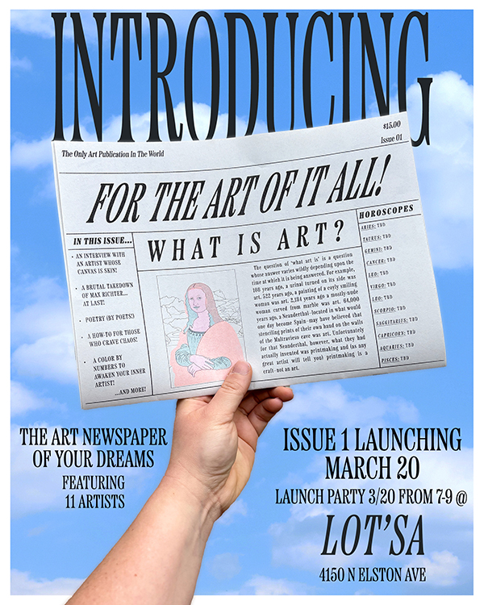

For The Art Of It All! Newspaper Launch Party
For The Art Of It All! is a biannual newspaper lovingly crafted in Chicago featuring artists from across the country working in visual art, poetry, humor writing, essays, and more. By analyzing art through the lens of the belief that everything is art, For The Art Of It All! aims to open up the floor for conversations about how every aspect of our daily lives is intrinsically connected to the acts of making or engaging with art in some way.
Issue 1 features 11 different artists from across the United States working in a diverse array of creative fields. Featured artists for the first issue include Ian Abramson, Emily Campbell, Timothy Collier, Cameron Gray, Emma Hyche, Andrew Kozlowski, Cassidy Kulhanek, Alicia Maciel, Risa Rubin, Aaron Scobie, and Katherine Tidwell.
For The Art Of It All! is risograph printed at Spudnik press in Chicago.